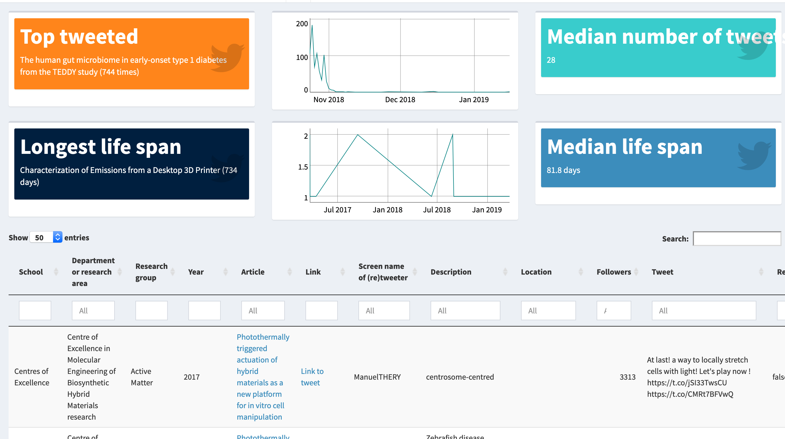

Apr 15, 2019
rOpenSci HQ
- Our next Community Call on Security for R with Ildi Czeller & Bob Rudis is coming up next Tuesday (May 7th). Create Your Own Security Adventure by telling us what you want to know about the topic.
Software 📦
CRAN:  GitHub:
GitHub: 
New packages
- The first version (
v1.1-1) ofsuppdatais on CRAN - downloading supplementary data from published manuscripts. Checkout the vignette to get started.

- The first version (
v0.1.0) ofconditionzis on CRAN - control how many times conditions are thrown. Checkout the README to get started.
New Versions
- A new version (
v0.2.19) ofrglobiis on CRAN - R Interface to Global Biotic Interactions. See the release notes for changes. Checkout the vignette to get started.
show informative messages when internet not up
- A new version (
v0.3.0) offinchis on CRAN - parse Darwin Core files. See the release notes for changes. Checkout the README to get started.
fix to unit tests for new EML version
- A new version (
v0.7.0) ofgeojsoniois on CRAN - Convert Data from and to GeoJSON or TopoJSON. See the release notes for changes. Checkout the vignettes to get started.
geo2topo/topojson_write fxns gain new parameter quantization; fixes related to sf package
- A new version (
v0.1.0) ofosmdatais on CRAN - import OpenStreetMap data as simple features or spatial objects. See the release notes for changes. Checkout the docs to get started.
new fxn osm_elevation; new vignette
- A new version (
v2.0-11) ofCoordinateCleaneris on CRAN - automated cleaning of occurrence records from biological collections. See the release notes for changes. Checkout the docs to get started.
changes to the description file
- A new version (
v2.0.0) ofEMLis on CRAN - read and write ecological metadata language files. See the release notes for changes. Checkout the docs to get started.
a ground-up rewrite of EML; primary difference is it’s now built on S3 instead of S4; most high level functions are preserved
- A new version (
v0.1.8) ofcodemetaris on CRAN - Generate codemeta metadata for R packages. See the release notes for changes. Checkout the docs to get started.
address internet timeout issue
- A new version (
v2.5.7) ofFedDatais on CRAN - get geospatial data from several federated government data sources. See the release notes for changes. Checkout the README to get started.
skip tests on CRAN that require internet
- A new version (
v0.2.1) ofsmapris on CRAN - acquisition and processing of NASA Soil Moisture Active-Passive (SMAP) data. See the release notes for changes. Checkout the docs to get started.
skip tests on CRAN that require internet; updated SMAP data versions
- A new version (
v0.2) oftradestatisticsis on CRAN - open trade statistics api wrapper and utility program. See the release notes for changes. Checkout the docs to get started. - A new version (
v7.2.0) ofdrakeis on CRAN - a pipeline toolkit for reproducible computation at scale. See the release notes for changes. Checkout the docs to get started.
many changes, see release notes
- A new version (
v1.1.1) ofnasapoweris on CRAN - NASA POWER API Client. See the release notes for changes. Checkout the docs to get started.
fixes for tests; fixes for NA’s and a documentation fix
Software Review ✔
We accept community contributed packages via our onboarding system - an open software review system, sorta like scholarly paper review, but way better. We’ll highlight newly onboarded packages here. A huge thanks to our reviewers, who do a lot of work reviewing (see the blog post on our review system), and the authors of the packages!
If you want to be a reviewer fill out this short form, and we’ll ping you when there’s a submission that fits in your area of expertise.
The following package was recently submitted:
- opentripplanner > OpenTripPlanner for R
- Author: Malcolm Morgan
- Issue: ropensci/onboarding#295
- Reviewers: not yet assigned
On the blog
Main blog
Stefanie Butland, Nick Golding, Chris Grieves, Hugo Gruson, Thomas White and Hao Ye wrote a post jointly published on our blog as well as the Methods in Ecology and Evolution blog: When Standards Go Wild - Software Review for a Manuscript.
Tech notes
Jeroen Ooms wrote about an update to the pdftools package: Join, split, and compress PDF files with pdftools.
Scott Chamberlain wrote about a new package called conditionz: conditionz: control how many times conditions are thrown.
Use Cases
The following 11 works use/cite rOpenSci software:
- Chakroborty et al. used plotly in their paper An unbiased in vitro screen for activating epidermal growth factor receptor mutations 1
- van Zonneveld et al. used rgbif in their pre-print Understanding patterns of abiotic and biotic stress resilience to unleash the potential of crop wild relatives for climate-smart legume breeding 2
- Axtner et al. used taxize in their paper An efficient and robust laboratory workflow and tetrapod database for larger scale environmental DNA studies 3
- Blakey et al. used rnoaa in their paper Bats in a changing landscape: Linking occupancy and traits of a diverse montane bat community to fire regime 4
- Miranda et al. used rgbif in their paper Climate change impact on ecosystem functions provided by birds in southeastern Amazonia 5
- Rodrigues et al. used skimr in their paper Transitioning from recruit to officer: An investigation of how stress appraisal and coping influence work engagement> 6
- Sanger & Warin used textreuse in their paper Dataset of Jaccard similarity indices from 1,597 European political manifestos across 27 countries (1945–2017) 7
- Van de Perre et al. used rgbif and rredlist in their paper Paleoclimate, ecoregion size, and degree of isolation explain regional biodiversity differences among terrestrial vertebrates within the Congo Basin> 8
- Chileen used neotoma in their thesis Vegetation response to wildfire and climate forcing in a Rocky Mountain lodgepole pine forest over the past 2,500 years 9
- Medury et al. used FedData in their paper Pedestrian Count Expansion Methods: Bridging the Gap between Land Use Groups and Empirical Clusters 10
- Conde et al. used taxize in their paper Data gaps and opportunities for comparative and conservation biology 11
In The News
Tuija Sonkkila wrote about working with altmetrics data in her post Everyday altmetrics, and used our package crevents to get Crossref Event data for a Shiny app. Source code: https://github.com/tts/aaltoced/blob/master/getdata.R

Call For Contributors
Part of the mission of rOpenSci is making sustainable software that users can rely on. Some software maintainers need to give up maintenance due to a variety of circumstances. When that happens we try to find new maintainers. We’ve had six recent examples of maintainer transitions within rOpenSci:
- RSelenium: now maintained by Ju Kim
- chromer: now maintained by Paula Andrea
- qualtRics: now maintained by Julia Silge
- rsnps: now maintained by Julia Gustavsen and Sina Rüeger
- rdpla: now maintained by Alyssa Columbus
- webchem: we’ve found a maintainer, but we’re still finalizing details
We don’t have any packages looking for new maintainers - if you are a maintainer and want to hand over that role to someone else get in touch with us.
Related News
- Brett Cannon, a Python Core developer, broke down/explained an XKCD comic about Python. It’s not about R, but still an interesting read. And there’s probably lots of R users that read XKCD. Find the post at https://snarky.ca/deconstructing-xkcd-com-1987/
Keep up with rOpenSci
- Mailing list: Sign up with an email address to get this newsletter sent to your inbox -> ropensci.org/#subscribe
- Alternatively, you can subscribe to this newsletter via our XML feed at https://news.ropensci.org/feed.xml or our JSON feed at https://news.ropensci.org/feed.json
- rOpenSci on Twitter: @ropensci
- The rOpenSci blog at ropensci.org/blog - you can subscribe in any RSS aggregator, or manually via https://ropensci.org/feed.xml. We also announce new blog posts on our Twitter account.
Footnotes
-
Chakroborty, D., Kurppa, K. J., Paatero, I., Ojala, V. K., Koivu, M., Tamirat, M. Z., … & Elenius, K. (2019). An unbiased in vitro screen for activating epidermal growth factor receptor mutations. Journal of Biological Chemistry, jbc-RA118. http://www.jbc.org/content/early/2019/04/05/jbc.RA118.006336 ↩
-
van Zonneveld, Mohamed Rakha, Shin-yee Tan, Yu-yu Chou, Ching-huan Chang, Joyce Yen, Roland Schafleitner, Ramakrishnan Nair, Ken Naito, Svein Ø. Solberg. Understanding patterns of abiotic and biotic stress resilience to unleash the potential of crop wild relatives for climate-smart legume breeding. bioRxiv 596072; doi: https://doi.org/10.1101/596072 ↩
-
Axtner, J., Crampton-Platt, A., Hörig, L. A., Mohamed, A., Xu, C. C. Y., Yu, D. W., & Wilting, A. (2019). An efficient and robust laboratory workflow and tetrapod database for larger scale environmental DNA studies. GigaScience, 8(4). https://doi.org/10.1093/gigascience/giz029 ↩
-
Blakey, R. V., Webb, E. B., Kesler, D. C., Siegel, R. B., Corcoran, D., & Johnson, M. (2019). Bats in a changing landscape: Linking occupancy and traits of a diverse montane bat community to fire regime. Ecology and Evolution. https://doi.org/10.1002/ece3.5121 ↩
-
Miranda, L. S., Imperatriz-Fonseca, V. L., & Giannini, T. C. (2019). Climate change impact on ecosystem functions provided by birds in southeastern Amazonia. PLOS ONE, 14(4), e0215229. https://doi.org/10.1371/journal.pone.0215229 ↩
-
Rodrigues, S., Sinval, J., Queirós, C., Marôco, J., & Kaiseler, M. (2019). Transitioning from recruit to officer: An investigation of how stress appraisal and coping influence work engagement. International Journal of Selection and Assessment. https://doi.org/10.1111/ijsa.12238 ↩
-
Sanger, W., & Warin, T. (2019). Dataset of Jaccard similarity indices from 1,597 European political manifestos across 27 countries (1945–2017). Data in Brief, 103907. https://doi.org/10.1016/j.dib.2019.103907 ↩
-
Van de Perre, F., Leirs, H., & Verheyen, E. (2019). Paleoclimate, ecoregion size, and degree of isolation explain regional biodiversity differences among terrestrial vertebrates within the Congo Basin. Belgian Journal of Zoology, 149(1). https://doi.org/10.26496/bjz.2019.28 ↩
-
Chileen, B. (2019). Vegetation response to wildfire and climate forcing in a Rocky Mountain lodgepole pine forest over the past 2,500 years. Thesis. https://krex.k-state.edu/dspace/bitstream/handle/2097/39566/BarrieChileen2019.pdf?sequence=1 ↩
-
Medury, A., Griswold, J. B., Huang, L., & Grembek, O. (2019). Pedestrian Count Expansion Methods: Bridging the Gap between Land Use Groups and Empirical Clusters. Transportation Research Record: Journal of the Transportation Research Board, 036119811983826. https://doi.org/10.1177/0361198119838266 ↩
-
Conde, D. A., Staerk, J., Colchero, F., da Silva, R., Schöley, J., Baden, H. M., … Vaupel, J. W. (2019). Data gaps and opportunities for comparative and conservation biology. Proceedings of the National Academy of Sciences, 201816367. https://doi.org/10.1073/pnas.1816367116 ↩